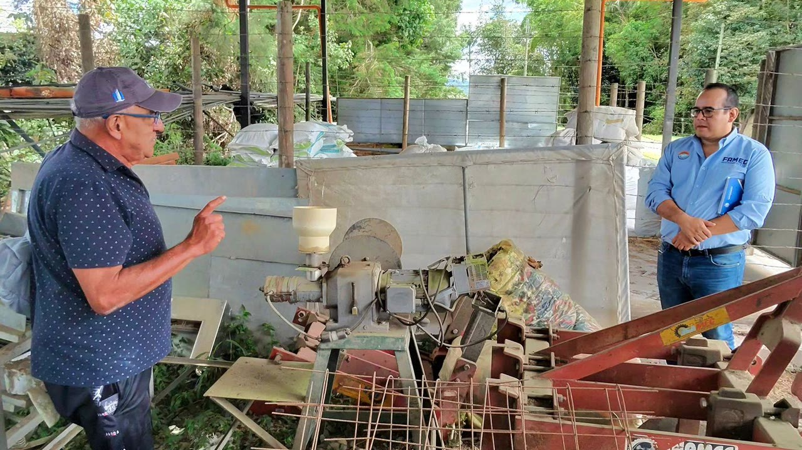
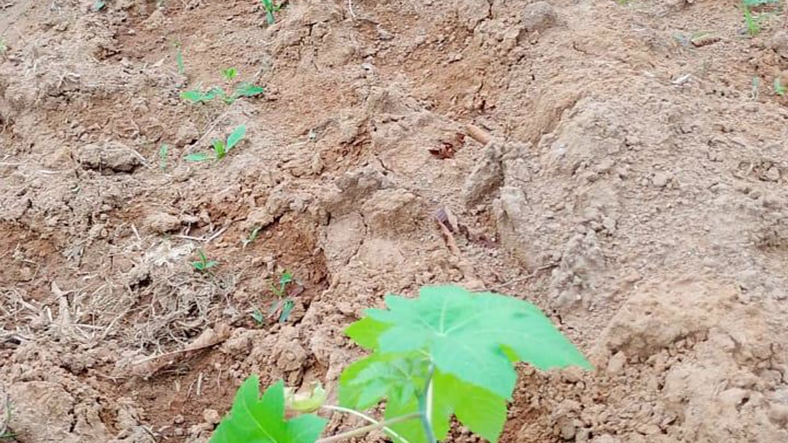
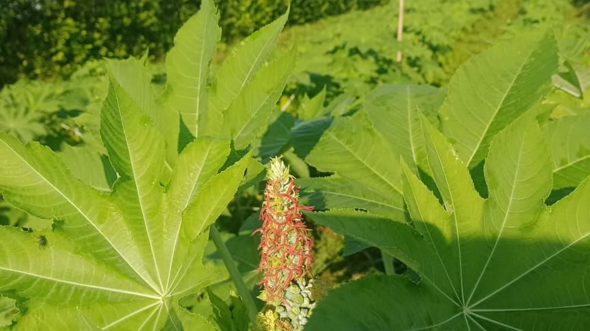

De la semilla de higuerilla a productos industriales de alto valor: aceite, energía, fertilizantes y especialidades químicas.
Una semilla, múltiples productos
El aceite de ricino extraído de las semillas de Ricinus communis contiene el 89% de ácido ricinoleico, un ácido graso hidroxilado único en la naturaleza. Esta singularidad química permite derivar más de 400 productos industriales que van desde lubricantes de alto rendimiento hasta biocombustibles de aviación.
Producto principal
El aceite de ricino crudo (castor oil) es el producto central de la cadena FAMEC. Obtenido por prensado frío o extracción con solvente de las semillas maduras de higuerilla, contiene entre el 45 y 50% de aceite por peso de semilla, con 89% de ácido ricinoleico.
FAMEC ya ha completado pruebas piloto exitosas en el Meta. El aceite extraído cumple especificaciones técnicas para uso industrial y biocombustibles, con trazabilidad verificada desde el origen.

Energía renovable
Mediante el proceso de transesterificación del aceite de ricino, FAMEC produce biodiésel de alta calidad (B100). Una hectárea de higuerilla genera hasta 1.300 litros de biodiésel al año, aproximadamente tres veces el rendimiento de la soya.
El biodiésel de ricino es compatible con motores diésel convencionales, reduce las emisiones de CO₂ hasta un 80% frente al diésel fósil y puede ser usado puro o en mezclas. Su estabilidad a bajas temperaturas lo hace ideal para uso en aviación sostenible (SAF).

Economía circular
La torta es el residuo sólido que queda tras la extracción del aceite. Rica en nitrógeno, fósforo y materia orgánica, puede emplearse como fertilizante orgánico de liberación lenta o como biomasa para generación de energía térmica.
Su incorporación al suelo cierra el ciclo de nutrientes, complementando la capacidad regenerativa de las raíces profundas de la higuerilla y potenciando la fitorremediación de metales pesados. FAMEC desarrolla protocolos de uso agronómico para maximizar su valor.

Mercado especializado
Más allá del biodiésel, el aceite de ricino es materia prima esencial para más de 400 productos industriales. Su estabilidad química, viscosidad única y alta temperatura de ignición lo hacen irreemplazable en varias industrias.
FAMEC apunta a segmentos de alto valor: lubricantes para motores de carreras, turbinas y refrigeración; nylon-11 y bioplásticos; tintas de impresión y barnices; productos farmacéuticos de grado USP; y cosméticos naturales certificados.
Infraestructura industrial
Centro agroenergético en desarrollo — sede inicial en el Departamento del Meta.
Capacidad de procesamiento de semilla de higuerilla en dos fases de expansión.
Fase 1: extracción primaria. Fase 2: refinación y procesamiento de subproductos.
Operación con energía solar fotovoltaica y biogás proveniente de los subproductos del proceso.
Centro de acopio regional con expansión planificada a 5 regiones de Colombia para 2035.
Contáctanos para cotizaciones, alianzas industriales o para conocer cómo vincularte a la cadena de valor de la higuerilla.
FAMEC · NIT 901823266-2 — Federación Agro Energética Mixta de Colombia · federacionfamec@gmail.com · 314 406 8801 · www.famec.co · Calle 33 Sur #46-03, Barrio Montecarlo, Villavicencio, Meta